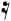

candidate #494
x=212.807
1/8 Down: conf=0.141 d=6.08

candidate #498
x=212.807
1/16 Down: conf=0.202 d=3.952

candidate #498
x=244.2
1/16 Down: conf=0.202 d=3.952
Every MusicSymbolCandidate inside the free-stem endpoint search radius is shown, including candidates rejected by geometry before PCA. The SVG is the exact smooth candidate geometry converted to contours for recognition.
| # | Candidate | Stem | Endpoint distance | PCA candidates | Verdict |
|---|---|---|---|---|---|
| 001 |  candidate #494 | Down x=212.807 | 0.87 sp | 1/16 Down: conf=0.222 d=3.502 1/8 Down: conf=0.141 d=6.08 | accepted: 1/16 Down (single-contour candidate) |
| 002 | candidate #498 | Down x=212.807 | 0 sp | 1/8 Down: conf=0.964 d=0.037 1/16 Down: conf=0.202 d=3.952 | accepted: 1/8 Down (contour 1/7) |
| 003 | candidate #498 | Down x=244.2 | 0.824 sp | 1/8 Down: conf=0.964 d=0.037 1/16 Down: conf=0.202 d=3.952 | rejected: recognized contour is not near free stem endpoint |
| # | Candidate | Stem | Endpoint distance | PCA candidates | Verdict |
|---|---|---|---|---|---|
| 004 |  candidate #586 | Up x=504.051 | 0.672 sp | 1/8 Down: conf=0.239 d=3.176 1/16 Down: conf=0.154 d=5.503 | rejected by PCA |
| 005 |  candidate #586 | Up x=574.907 | 0.479 sp | 1/8 Down: conf=0.239 d=3.176 1/16 Down: conf=0.154 d=5.503 | rejected by PCA |
| # | Candidate | Stem | Endpoint distance | PCA candidates | Verdict |
|---|---|---|---|---|---|
| 011 | candidate #256 | Down x=556.514 | 0 sp | 1/8 Down: conf=0.964 d=0.037 1/16 Down: conf=0.202 d=3.952 | accepted: 1/8 Down (contour 1/2) |
| # | Candidate | Stem | Endpoint distance | PCA candidates | Verdict |
|---|---|---|---|---|---|
| 012 |  candidate #596 | Up x=539.398 | 0 sp | 1/8 Down: conf=0.208 d=3.815 1/16 Down: conf=0.193 d=4.184 | rejected by PCA |
| 013 |  candidate #598 | Up x=539.398 | 0 sp | 1/8 Down: conf=0.622 d=0.607 1/16 Down: conf=0.218 d=3.585 | rejected: PCA direction Down != stem Up |
| 014 |  candidate #596 | Up x=574.907 | 0.937 sp | 1/8 Down: conf=0.208 d=3.815 1/16 Down: conf=0.193 d=4.184 | rejected by PCA |


{kind=link}
{kind=link}
{kind=link}
{kind=link}